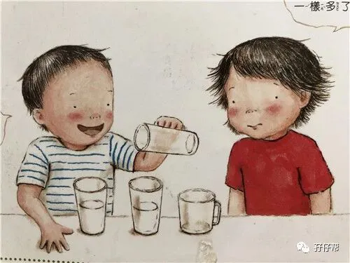
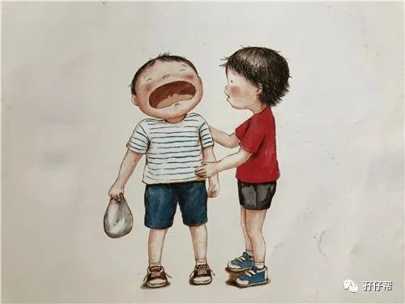
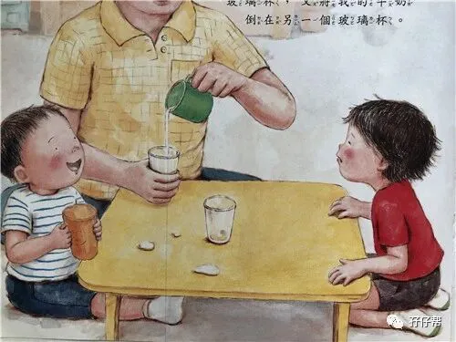
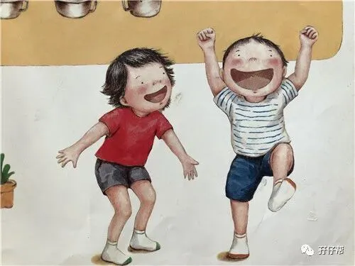
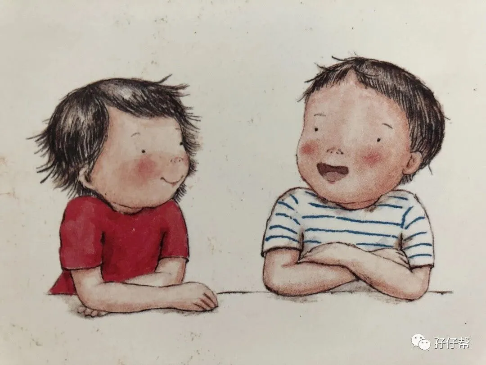

子宫，可以收缩，
熬一熬，撑一撑，挤一挤，
坚持10个月，调理30天，
基本就复原了。
母爱，不一样。
母爱是一辈子的。
母爱，其实不博爱，有时候还很狭隘，
而双胞胎的母爱...
终究是一场一碗水难以端平的遗憾。
----孖仔帮
文|圆圈妈，一个文思如尿崩的双胎妈妈
图|来自网络，如有侵权，请联系删除
· 正 · 文 · 来 · 啦 ·
今天，双胞胎圆圈兄弟吵架了，具体原因不明，但是吵架术语很耐人寻味。
“圆圆，你刚才打我，我要告诉你的妈妈，让她惩罚你！”
“圈圈，是你先抢我的玩具，我也要告诉你的爸爸，让他打你屁股。”
“…#$…”
“…&$…”
真是让人哭笑不得的对话。
明明是双胞胎亲兄弟，怎么爸爸妈妈还分你的我的。
仔细想想，他们哥俩似乎经常对彼此说“你的妈妈”“我的爸爸”这样类似的话语。
这不就是我们小学生时代经常在课桌中间用小刀刻出一条线，简称“三八线”！
他们似乎早已内定好，妈妈是谁的，爸爸是谁的？
而且还不是嘴上说说而已，行动上也非常明显。
过马路时，圈圈要牵着爸爸的手，圆圆要牵着妈妈的手，不然就坚决不肯过马路。
我纳闷极了。
明明我已经牵着圈圈的手了，他非要甩开我去牵爸爸。
我很失落，虽然他有时候也会粘我，但我很介意，甚至有点吃醋。
因为我明显感觉到，在圈圈的心里，爸爸才是第一位，关键时刻只有爸爸才能给他安全感。
可能在圈圈眼里，觉得我只爱圆圆不爱他。
的确，圆圆出生没多久因脑炎又去了次NICU，再次与死神擦肩而过。
我对圆圆有种失而复得的感觉，总觉得他受了很多罪，我要多照顾他一点。
而队友则觉得圈圈被妈妈忽视了，理应多匀一点父爱给他，对较少接触的圆圆却有种“癞蛤蟆想吃天鹅肉”的心情。
因为圆圆经常腻着我，完全不给队友表现父爱的机会，甚至对队友有敌意，有时候队友要牵我手，他就很生气把我的手夺回来。
我时常觉得我家的关系很畸形：四角恋！
爸爸喜欢哥哥，哥哥喜欢妈妈，妈妈喜欢弟弟，弟弟喜欢爸爸….
无独有偶，前几日收到一龙凤胎胎妈妈的求助。
原本和睦的家庭因双胞胎的到来被分为两大派别，哥哥与爸爸妈妈，妹妹与爷爷奶奶。
因妈妈多亲近哥哥，奶奶多疼爱妹妹，于是久而久之就形成了这个不成文的规定。
这让她非常郁闷，焦虑...而我也深有体会！
在外人眼里，家有双胞胎很欢乐，很幸福。
熟不知，双胞胎的到来给整个家庭带来欢声笑语的同时，也导致一系列的问题，而且很多苦不堪言的状况都是无法用当代汉语字典里的词语去描述的！
在普通家庭，孩子经常会对外人说：“我最爱妈妈，不爱爸爸！”
在双胞胎家庭，两孩子则会跟对方说：“爸爸是你的，妈妈才是我的！”
要是你家也有这种情况，请谨慎对待，这一点都不好玩，一点都不好笑！
两孩子看似吵架的对话，并不是天真无知的吵嘴，而是孩子敏感脆弱的心已经感觉到父母或亲人的偏心和不公平，孩子情感的天平也跟着发生了变化。
这是在提醒我们为人父母，对待孩子，请注意一碗水端平。
但，你跟双胞胎父母谈一碗水端平，这不是耍流氓吗？
人心都是偏长的,就算手心手背都是肉,那五个手指头还长短不齐呢。
在双胞胎家庭谈完全公平等于卖梳子给一个和尚，不是件容易的事情，甚至是不可能的事情。
在实际养育双胞胎的过程中，我们的一碗水是很难端平的。
奶水不够时，只能一个吃母乳，另一个吃配方奶，
同时饿的时候，必定有一个先吃，另一个后吃，
同时哭的时候，只能先哄一个，再哄另一个，
同时索抱的时候，只能爸爸抱一个，妈妈抱一个，
卧室太小，床不够大，只能婆婆带一个睡，妈妈带另一个睡，
若手中只有一条裤子，必定会有一个光着屁股，
就连你想对他们笑一个，你也要先与一个对视着微笑，接着目光轮到下一个，
….
两孩子在不断成长的过程中，从父母那里渐渐地体会到失宠，受宠。
任意一方稍有偏颇就会产生诸如“妈妈对哥哥好一点”“爸爸对弟弟好一点”的错觉。
于是两人就自发形成这条特殊的“三八线”。
难道就这样无计可施？任由两孩子误会下去吗？
办法还是有的，且只有一个。
时间！
用时间去证明！
对那位被你不小心忽视的孩子花更多时间，给与更多关爱！
时间会告诉你：孩子其实很简单，要的不多，只是需要你多一点陪伴，多一点关注，就足够了。
时间会告诉两孩子：爸爸妈妈都爱着我和那个跟我一样大，长得一模一样的人！
我其实很早就觉察到圈圈对我不同寻常的态度，而我自知理亏，一直想办法弥补。
我不想看到他明明喊我妈妈，却把我当陌生人一样看待。
我要用行动告诉他，他和圆圆都是我的儿子，我爱圆圆的同时一样爱他。
孩子真的很单纯，你对他付出真心，他必定双倍奉还给你。
经过大半年的努力，圈圈看我的眼神柔和了很多，说“三八线”那种字眼的话也逐渐减少。
虽然他依然把爸爸放在第一位，但我知道他已经把“妈妈”这个人放在第二位。
对此，我已经心满意足了。
如果你家也有这样一条“三八线”，我有3个小贴士与你共享，一起共勉。
努力把这条“三八线”从两孩子的内心深处抹去，让亲子关系更加和谐，坦诚。
①放弃平等
先喂那个正在哭闹的孩子，还是喂那个按顺序应该先喂的孩子？爱哭的那个是不是应该多抱一会儿？
类似这样的选择几乎每天都会在生活中出现，偏袒了一个，必定会让另一个失宠。
这个时候，劝你别纠结了。
与其夹在中间左右为难，不如听从理智的选择。
暂且把公平丢在一边，谁最需要你的安抚，谁是真的饿了，把那个哭的最厉害的孩子抱在怀里吧。
②切勿比较
在教育双胞胎孩子时，我们难免会拿俩孩子比较，一个孩子表现好了，马上教训另一个孩子好好学。
其实这不只会让两个孩子相互嫉妒甚至记恨，最重要的是，孩子很容易从父母的评价中去判断，爸爸妈妈的情感天平倾向于谁。
经常被数落的那个自然就会觉得妈妈不爱他，只爱另外一个。
每个孩子都有他的可取之处和属于各自的闪光点。
双胞胎孩子切记毫无意义的比较，而是要让孩子感觉到妈妈爱每一个人，从而避免亲子间的误会。
③与双胎之一单独相处
若孩子稍大一点，就亲子间好好谈谈。
明确告诉他，你很爱他！并对自己行为造成他的误解表示歉意，希望得到孩子的原谅和改过自新的机会。
注意：一定要用你真诚的眼神看着他，充满爱的拥抱感化他，让他从内心里消除对你的误解！
平时尽量多制造机会，与那个被你不小心忽视的孩子独处。
例如，约好某个周末安排两个孩子单独与爸爸或妈妈外出。
独处会让你们的亲子关系更加亲密无间。
请暂时忘记你还有一个孩子，全心全意地陪伴你身边的这个孩子一起玩吧！
孩子的“读心术”是无师自通的，你是否心不在焉，他们感觉得到。
本期互动
#你对双胎之一偏心了吗？#
欢迎留言区说出你的痛点！
-END-
重磅互动
#你希望写什么育儿经验干货？#
评论区聊一聊
随便提，万一下篇就写了呢？
关于这个号
谢谢关注！
我是圆圈妈
85后，全职妈妈
家有孖仔两枚，圆圈&圈圈
双胞胎育儿公众号：孖仔帮
ID:twinsbang
旨意分享双胞胎育儿经验帮助双胞胎家庭
有经验可循
有组织可靠
希望我的经验对您有所启发
期待与您一起共享双胞胎育儿经






